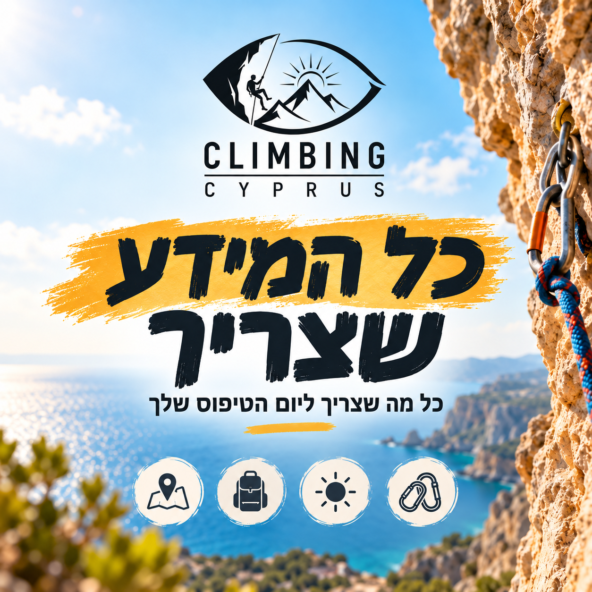

אז מה התכנית? 🧗♂️
כל מה שצריך לדעת לקראת יום טיפוס צוקים מהנה, בטוח ומלא בנוף קפריסאי.
📍 מצוק גרקופטרה
⚠️ כ־100 מטר לפני היעד תגיעו להתפצלות. פנו שמאלה, גם אם תראו תמרור “אין כניסה” — זו הדרך הנכונה 😊
המשיכו בנסיעה עד שתראו רכב Škoda Yeti שחור, מספר KZB-890.
המשיכו בנסיעה עד שתראו רכב Škoda Yeti שחור, מספר KZB-890.
📍 תחת עצי זית ליד פח ירוק גדול ישנה חנייה רחבה. הרכב שלי יחכה שם — סקודה שחורה עם לוחית הזיהוי שלה.
⏳ לוח זמנים · כ־3 שעות
- 15 דקותמפגש בחניה והליכה קצרה ונופית אל המצוק.
- 10 דקותהיכרות עם האזור, היכרות הדדית ותדריך בטיחות מקיף.
- 10 דקותחלוקת ציוד טיפוס מקצועי וחימום קבוצתי קל.
- 120 דקות💪 טיפוס על המצוק!
- 10 דקותשחרור, מתיחות ואיסוף הציוד.
- 15 דקותסיכום קצר, שיתוף חוויות והליכה חזרה למכוניות.
🎒 מה להביא
- 👟 נעליים סגורות ויציבות — בלי כפכפים, סנדלים או מגפיים.
- 💧 לפחות 1.5 ליטר מים לכל משתתף.
- 🧢 כובע
- 🧴 קרם הגנה
- 👱♀️ גומיות לשיער ארוך
- 🍏 חטיפים קלים
- 🗑️ שקית קטנה לאשפה האישית
⚠️ חשוב מאוד: חתימה על Waiver
לפני הפעילות כל המשתתפים חייבים למלא ולחתום על טופס אישור ההשתתפות והצהרת הבריאות.
💬 צריכים עזרה או רוצים לתאם?
שלחו לי הודעה ב־WhatsApp ואשמח לענות על כל שאלה לפני יום הטיפוס.